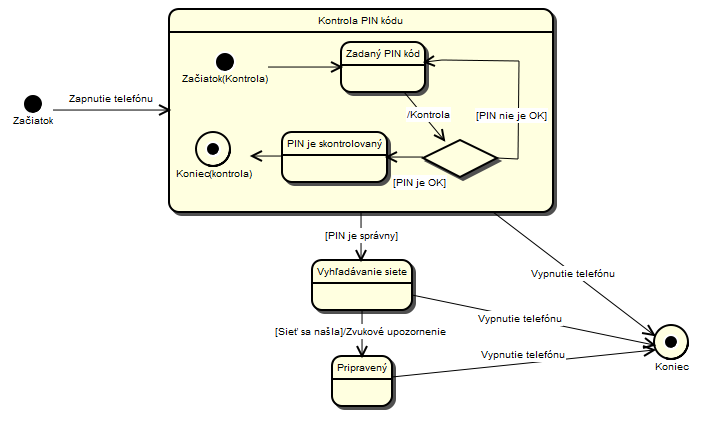

UML - Stavový diagram (State Machine Diagram description)
Stavový diagram zobrazuje stavy jedného objektu, v ktorých sa počas svojej existencie môže nachádzať ako následok reakcie na udalosti vyskytujúcich sa v systéme.
Stavový diagram obsahuje Stavy (obdĺžnik s oblými rohmi), tento element predstavuje stav objektu v danom okamihu. Každý stavový diagram musí mať začiatok a koniec,
pričom začiatok a koniec sú tiež stavy. Prechod (Transition) z jedného stavu do druhého zobrazuje šípka. Prechod môže obsahovať Udalosť (dôvod prechodu, môže to byť
signál, udalosť, zmena v nejakej podmienke a pod.), Podmienku (podmienka, ktorá musí byť splnená, aby prechod medzi stavmi nastal) a Efekt (akcia, ktorá sa vykoná ako
dôsledok prechodu z jedného stavu do druhého). Syntax pre Prechod je: Udalosť[Podmienka]/Efekt.
Ukážka stavového diagramu mobilného telefónu:

Pre viac informácii odporúčam navštíviť iné zdroje, napríklad State Machine Diagram wiki